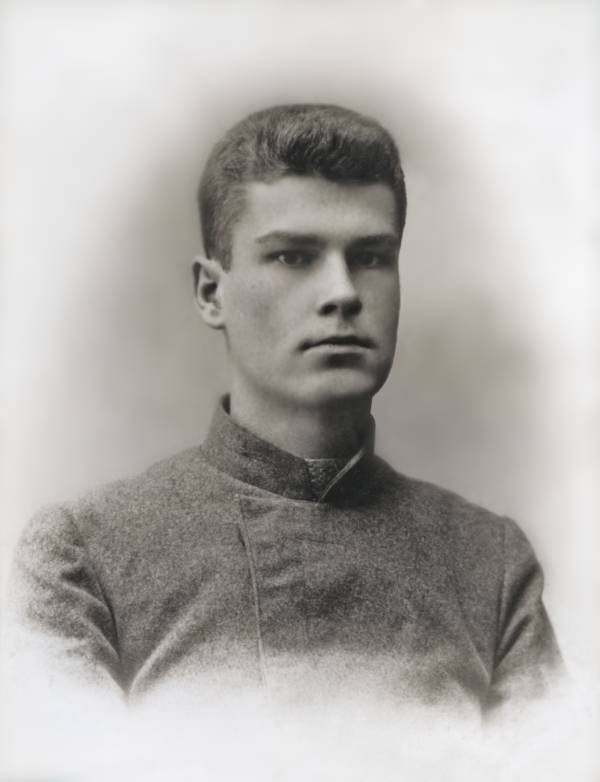
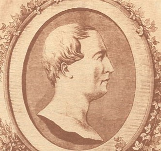
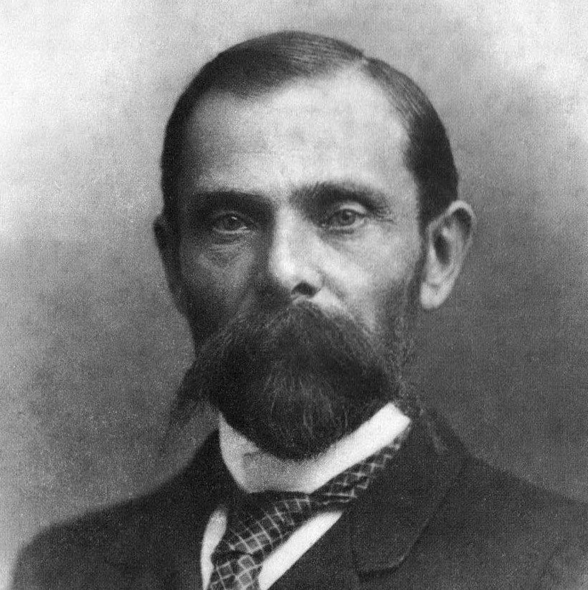
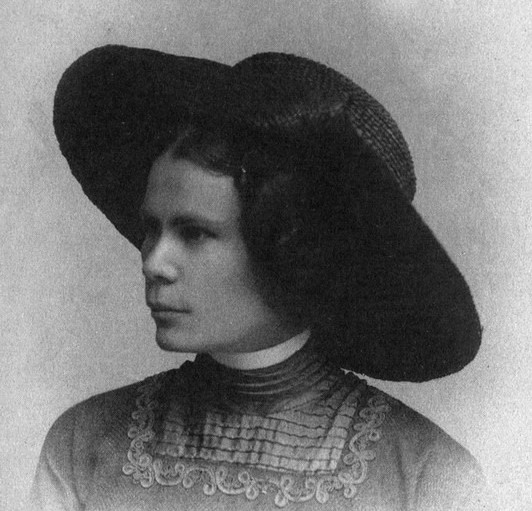
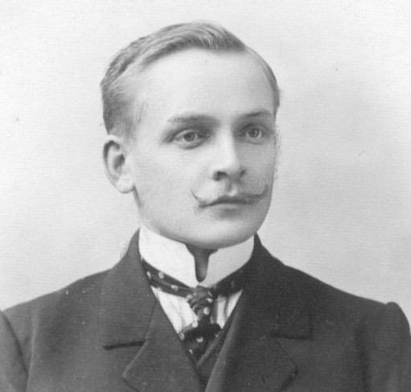
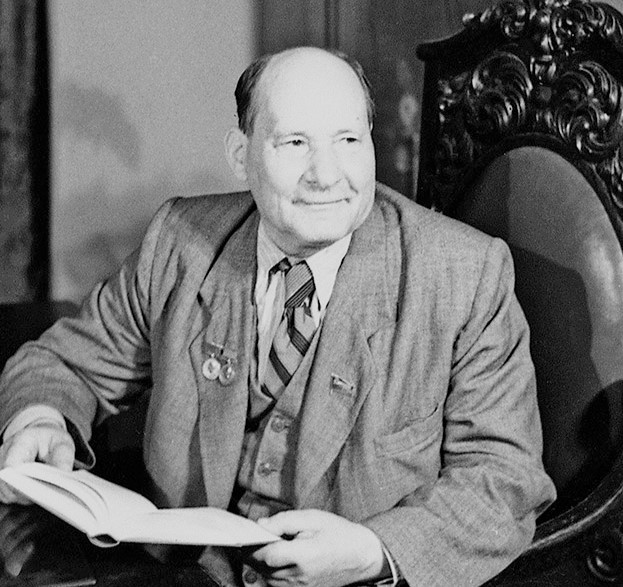
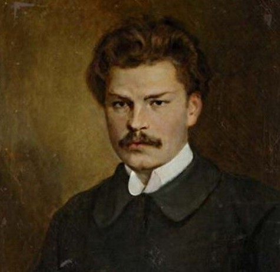
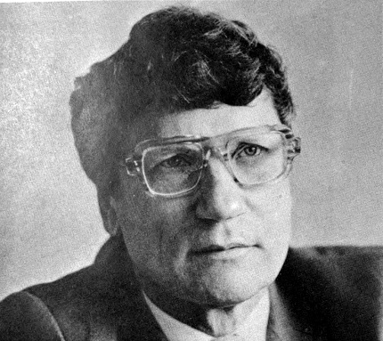
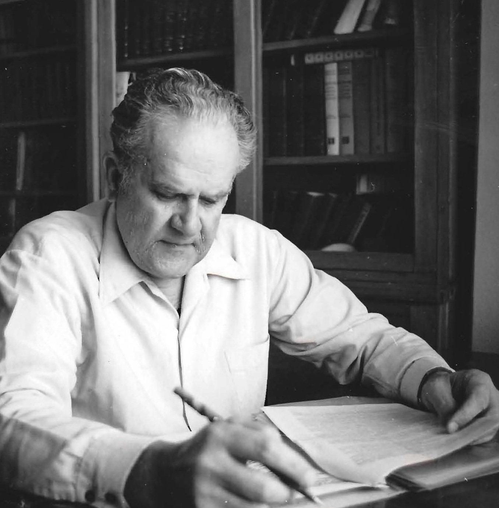
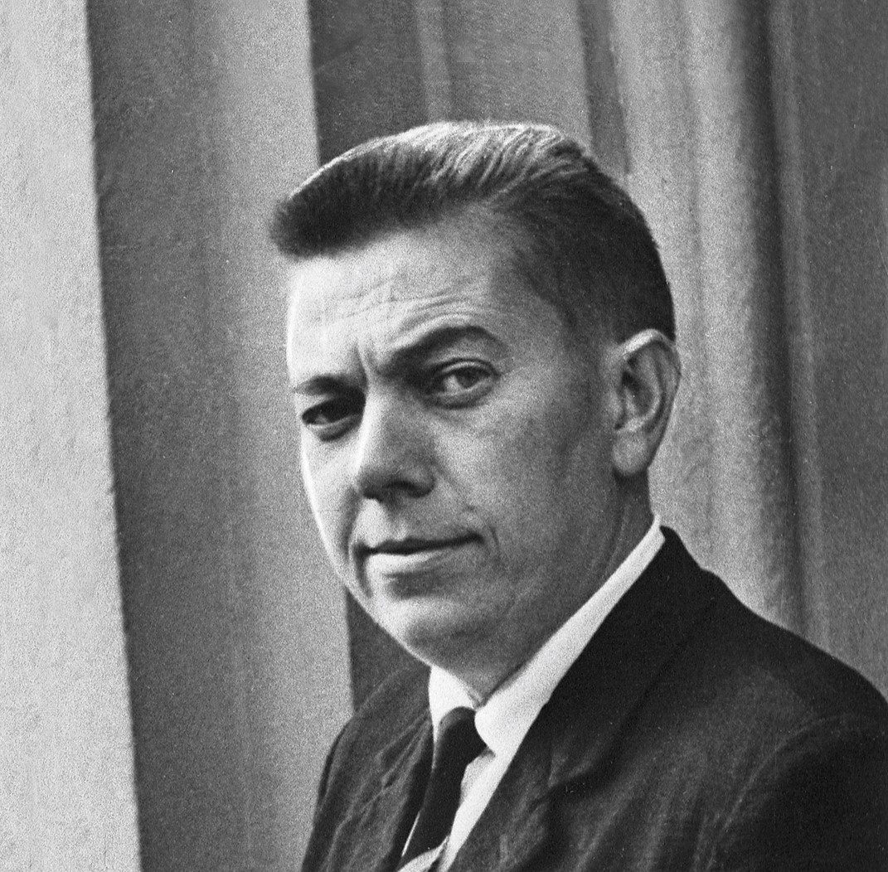

«З нашых вершаў можна было б лёгка зрабіць “кароткі паўтарыцельны курс” еўрапейскіх пісьменніцкіх напрамкаў апошняга веку. Сентыменталізм, рамантызм, рэалізм і натуралізм, урэшце, мадэрнізм - усё гэтае, іншы раз нават у іх розных кірунках, адбіла наша паэзія, праўда, найчасцей бегла, няпоўна, але ўсё ж ткі адбіла.»
Максім Багдановіч (1891-1917)

Литературный процесс XIX - начала XX века
Литературный процесс Беларуси XIX - начала XX века развивался в условиях, когда белорусский язык и культура не имели государственной поддержки. После разделов Речи Посполитой наши земли оказались в составе Российской империи, где проводилась политика русификации. Шляхта и интеллигенция пользовались польским языком как языком образования и литературы, а белорусский оставался языком крестьян. Ситуация начала меняться, когда сентиментализм принёс интерес к народным чувствам и родной земле, а позже романтизм возвысил идею национального самоопределения. К концу века белорусская литература постепенно возрождалась, чтобы в начале XX века с новой силой заявить о себе - через произведения Максима Богдановича, Янки Купалы и Якуба Коласа, которые стали её новым голосом.
Авторы

Ян Чечот (1796-1847)
Ян Чечот родился 7 июля 1796 года в деревне Малюшичи (ныне Кореличский район) в обедневшей шляхетской семье. Детство будущего поэта прошло рядом с крестьянскими детьми в имении Репихово, поэтому белорусскую культуру и язык он воспринимал как родные. В 1809 году он поступил в новогрудскую школу, где подружился с Адамом Мицкевичем, и эту дружбу они пронесли через всю жизнь. В 1816 году Чечот поступил в Виленский университет, но из-за финансовых трудностей был вынужден оставить учебу и устроиться на работу в канцелярию, занимавшуюся разбором архива князей Радзивиллов. Он стал членом тайного общества филоматов, а позже возглавил литературный отдел общества филаретов, где был признан одним из лучших поэтов края. В 1823 году Чечота арестовали по делу филоматов и сослали в Оренбург, а затем под полицейский надзор в Уфу, где он вместе с другом Томашем Заном взял всю вину на себя, спасая Мицкевича и других товарищей. Вернувшись на родину, он работал канцеляристом в Лепеле и стал собирать белорусский фольклор, издав в 1837-1846 годах шесть сборников «Сялянскія песні з-над Нёмана і Дзвіны». Чечот был одним из первых известных авторов белорусскоязычных текстов и предопределил появление жанра гутарки в белорусской литературе. Он также стал одним из первых теоретиков белорусского языкознания, доказав специфичность белорусской языковой системы. Подорванное здоровье не позволило поэту полностью реализовать свой талант, и он умер в 1847 году во время лечения в Друскениках, оставшись знаковой фигурой для истории Беларуси, Польши и Литвы.
Основные произведения: «Сялянскія песні з-над Нёмана і Дзвіны» (шэсць зборнікаў), «Калдычэўскі шчупак», «Падземны звон на горцы ў Пазяневічах», «Покуль сонца ўзыдзе...».
«Да мілых мужычкоў»
Песеньку спяваці,
Ды і я ж між вамі ўзрос
Пры бацьку і маці.
І мне Бог на свеце даў
Гора гараваці,
Штоб лепш я вас любіў
І ўмеў спагадаці.
Ой, што ж вы напелі тут,
Ды якога дзіва!
Шкода, што на голас ваш
Старонка драмілва.
Гэта Добрадзейка,
Пэўна, будзе слухаць вас
Лепш, як салавейка.
Будзем колісь так і мы,
Як тыя гуралі,
Што пан даў ім есць і піць,
Яшчэ й грошы бралі.
Трэба толькі слухаць нам
Рады таго татка,
Што то казаў гаварыць,
Каб аджыла хатка.
Не піў, як мы, водкі,
А то б яму вялеў ён:
Кінь і мёд салодкі.
Ой, гаруйма, братцы, мы,
Кіньма горку жлопель,
Што не з жыта гоняць ўжо,
А з аўса, з картопель.
Кіньце першы, жонкі, вы,
Мілыя дзяўчаты,
Доля, шчасце зачне жыць,
Дзе цвяроза хата.
Стихотворение Яна Чечота «Да мілых мужычкоў» - одно из первых текстов, где звучит обращение к белорусскому крестьянству как к полноправной общности, а не как к «мужикам» без голоса. Поэт пишет от имени человека, который сам вырос «між вамі», поэтому его сочувствие - не позиция со стороны, а внутренняя близость. Через образ «Добрадзейкі», который может проснуться и услышать народную песню, Чечот передаёт надежду на то, что и власть когда-то обратит внимание на простых людей. Стихотворение возникло в 1830-1840-е годы, когда после разделов Речи Посполитой белорусские земли входили в состав Российской империи, а белорусский язык считался «мужицким». Чечот писал по-белорусски в то время, когда это было почти исключением, и тем самым закладывал основу национального возрождения. Через это произведение можно изучать, как литература начинала формировать национальное самосознание задолго до XX века.

Франтишек Богушевич (1840-1900)
Франтишек Богушевич родился 21 марта 1840 года в фольварке Свираны близ Вильни в обедневшей шляхетской семье. Детство будущего поэта прошло в родовом имении Кушляны Ошмянского повета. Он учился в Виленской гимназии, где увлекся историей и участвовал в сборе экспонатов для музея древностей. В 1861 году окончил гимназию и поступил на физико-математический факультет Петербургского университета, но из-за студенческих волнений вскоре был вынужден оставить учебу. Богушевич принял участие в восстании 1863–1864 годов, воевал в отряде Людвика Нарбута, был ранен и чудом избежал гибели благодаря спасению крестьянами. В 1865 году он поступил в Нежинский юридический лицей, после окончания которого работал судебным следователем, а затем адвокатом, защищая в судах простых крестьян. В 1884 году после амнистии он вернулся в Вильню и занялся адвокатской практикой, не беря денег с бедняков. В 1891 году в Кракове вышел его первый поэтический сборник «Дудка беларуская», изданный латиницей и ставший первой полностью белорусскоязычной книгой поэзии. В 1894 году вышел его второй сборник «Смык беларускі». Богушевич писал под псевдонимами Мацей Бурачок и Сымон Рэўка з-пад Барысава, имитируя наличие нескольких активных белорусских авторов. В предисловии к «Дудке беларуской» он поднял статус белорусского языка до уровня европейского языка. Богушевич скончался в апреле 1900 года в родных Кушлянах, оставив после себя светлую память как один из основоположников новой белорусской национальной литературы и инициатор критического реализма в ней.
Основные произведения: «Дудка беларуская» (зборнік), «Смык беларускі» (зборнік), «Кепска будзе!» (паэма), «Тралялёначка», «Дзядзіна», «Палясоўшчык» (апавяданні).
«Кепска будзе!» (1891)
Бацька сказаў: «Кепска будзе!»
Ну дык жа ж не памыліўся:
Здзекавалісь Бог і людзе.
А чым кепска? - бо на марцы
Я радзіўся (пост праўдзівы,
Цяжкі месяц гаспадарцы.
Як пражыў хто, - будзе жывы).
Пераеўся хлеб да крышкі,
Бульбы толькі як пасеяць,
І прыварку ані лыжкі,
І скаціна - хоць развеяць;
Ні саломкі, ні то сена,
Хоць бы на раз для скаціны;
А тут дроў ані палена,
А тут яшчэ нарадзіны!
Трэба ж бабе бохан хлеба
І гарэлкі ж трэба пляшку,
Яшчэ ж хрысціць хлопца трэба...
Вот і думай, як сярмяжку
Нясці жыду пад заставу
Ці прадаць каня, кароўку?
«Сеў, - казаў ён, - я на лаву,
Узяўшыся за галоўку,
І заплакаў, аж заліўся,
Так, як бацьку пахаваўшы...
Кепска зрабіў, што радзіўся,
Кепска будзе, свет пазнаўшы!»
Ці то слова йшло урокам,
Што сказаў у кепскім часе,
Ці хто кінуў такім вокам?..
Ну і доля ж удалася!
І збылося ж бацькі слова!
Вот у тыдзень вязуць гэта
Хрысціць мяне да Макрова
Кумоў двое і кабета.
У Аборках мост сарвала,
А я ж быў - чуць жывы, слабы.
Рада - ў раду, на тым стала,
Што ахрысцяць з вады бабы.
З Беразіны жменяй вады
Кума сама зачарпнула,
Паматала сюды-туды.
Трэйчы на мяне лінула.
«Вот і хрэст увесь тут, - кажа, -
І ксёндз хрысце гэтаксама,
Толькі яшчэ чымсь памажа,
А хлопцу ўсё роўна - яма!
Хоць бы жывым хоць давезці,
Каб дарогай не сканала, -
Скажуць - кепска вязла гдзесьці
Або туга спавівала!..»
Гэтак мяне пахрысціўшы,
Вязуць назад ужо да маткі,
Вочы добра пазаліўшы,
Ледзьве уняслі да хаткі.
Закусіўшы тут як трэба,
Пакумаліся, і квіта:
Баба ўзяла бохан хлеба,
Пляшку водкі, торбу жыта;
Разышліся і паснулі.
Матка ж мяне калыхае:
«Люлі, - шэпча, - сынок, люлі...»
А як зваць? - сама не знае.
Вот назаўтра спазарання
Бяжыць матка да кумошкі
Ды пытае: як празванне
Далі сыну? Лёну трошкі
Тут прынесла пры здарэнню,
Трошкі сала, круп са жменю...
А кума ж была праворна:
Хоць што збрэша - не запнецца;
Круце сабе ў сенях жорна,
Трэба ж салгаць! Куды ж дзецца?
«Імя, - кажа, - твайму сыну
Ксёндз хацеў даць па кантычцы,
Думаў ён, можа, з гадзіну,
Узяў ксёнжку, як стаў рыцца,
Дык даў потым з каліндарка»!
Матка прандзей з хаты ў сені,
Як бы цівун гнаў па карку,
Усё шэпча то імене:
«Аліндарку, Аліндарку!»
Прыляцеўшы так дадому,
За калыску узялася
І зрадзела, як святому,
Што аж слязьмі залілася.
І калыша, і галосе:
Надта імя спадабала,
Надта добрае здалося,
Што такога і не знала!
Вот і клікаць мяне сталі
Скаліндаркай, Аліндаркай...
Ну, як зналі, так і звалі.
Але вот што з гаспадаркай?
Наперш конь здох таго ж лета,
І цялушка, як лань, пала...
Матка ж, ведама, кабета,
Затужыла і запала,
Гадкоў зо тры пацягнула,
Ў марцы й ручанькі згарнула.
(А ўсё ў марцы, трэба ж гэта!
А разумная была кабета!)
З таго гора бацька бедны
Стаў маркотны, як магіла.
Было сядзіць такі бледны...
«Што ж ты гэта нарабіла?!»
Гэтак скажа і заплача.
(Хто ж пачуе, хто забача?)
Потым дай памалу сватаць;
Трэба ж, ведама, жаніцца,
Каб было каму палатаць,
Каб было у што змяніцца,
А так усё памарнела:
Куры, гусі, навет свінне.
І свіння дзяцей паела,
І карова марне гіне...
Увосень давай шукаць пары,
Ды ніводная не хоча;
Аднэй бедны, другой стары,
Трэця, чорт ве - што тароча:
«Аддай, - кажа, - Аліндарку
Куды-кольвек хоць на людзе,
Сядзь на нашу гаспадарку,
Тагды выйду, добра будзе!»
Бацька кідаўсь зо тры тыдні,
Яшчэ горай зажурыўся,
Прадаў сякі-такі злыдні,
Разлайдачыўся, распіўся
І умёр так пад гародам,
Устраміўшы ў плот галоўку!
Шапку найшлі аж за бродам
І у шапцы залатоўку.
А назаўтра прывёў соцкі
Асэсара, паноў трое.
Труп той зрэзалі на клёцкі...
(А у марцы ж было й тое!)
Мяне цётка, у апеку
Ўзяўшы, трошкі падрасціла
Ды якомусь чалавеку,
Як за сына, адпусціла.
Незадоўга змёрла цётка,
Я стаў круглая сіротка.
Ці гдзе днюю, ці начую,
А ўсё бяду сваю чую!
Пастухі збяруцца ў гаю,
Пяюць песні ля бярозы,
А мне чагось, сам не знаю,
Смутна, цяжка, цякуць слёзы.
Рос я гэтак за вачыма,
Ужо трэйчы спавядаўся,
Калі зімой да айчыма
Ды ураднік заблукаўся.
Пляту лапці, ўю аборы,
Ён паказуе праз плечы:
«Што-то сын твой, - кажа, - хворы?»
«То не сын! - айчым той кажа. -
Ўзяў сіротку; дзякуй Богу,
Добры ўдаўся: позна ляжа,
Рана ўстане і адлогу
Не запусце... спагадлівы;
Маю сына, хоць не родны.
Ажаню, як буду жывы,
Будзе Богу й людзям годны!»
«А лет сколькі?» - той пытае.
«Дваццаць, - кажа, - мусіць, мае?»
«А зваць як?» - «Да Каліндарка!..»
Ратнік піша усё шпарка.
Як радзіўся, гдзе хрысціўся?..
Пісаў, пісаў дый паехаў!
Бацька яго угасцілі,
Далі торбачку гарэхаў...
После таго, так не далей,
Як у тыдзень і асэсар
Шусць у хату (і з мадаляй).
«А гдзе, - кажа, - той пасэсар,
Твой Ліндарка, ці як звецца,
Што хаваецца з някруцтва,
Пляцець лапцікі на печцы?..
Ашуканства, баламуцтва!..»
А я ж ехаць меў па дровы,
Бацька клікнуў, іду ў хату...
А асэсар - той - здаровы!..
Лясь мне ў морду, потым тату.
Я ж узяў яго за грудзі
І піхнуў лыбом у дзверы.
Ён як раўкне: «Гэй вы, людзі,
Тут разбой! Прыміце меры!..
Тут рыштант, брадзяга скрыты, -
Вот і лэб калісь быў брыты, -
Вяжы ўсіх, нараджайся!..»
Мяне лясь! «Ты хто? Сазнайся!..» -
«Скаліндар, - кажу, - сірота!..»
Пацягнулі па дарозе,
Завязалі і варота,
Мы ж спыніліся ў астрозе...
Астрог, братцы, паглядзеўшы
Мімаходам, выглядае,
І нічога: шык, не еўшы,
І ў астрозе не бывае,
Але лепшы ў хаце голад,
У дарозе велькі холад,
Найцяжэйша праца ў полі,
Як у той астрожнай долі!
Відзеў пташку я у клетца,
Як галоўкай потым б'ецца,
Аж скрыдэлкам затрапоча -
І сканае... жыць не хоча.
Раз лісіцу, адкапаўшы,
Прывязалі мы да кола:
Стала ж грызці што папаўшы,
Сабе бруха распарола,
Растрыбушылась на часці,
Каб не жыць так, хоць прапасці.
Нашто - гадзіну, мядзянку,
Пусці ў шклянае начынне, -
Сама сябе без прастанку
Будзе жаліць, покі згіне!..
Як ужо ж скаціна тая
Або гадзіна праклята
І та цану волі знае,
Што ж для нашага-то брата,
Меўшы розум не скацінны,
Як знаць волю мы павінны?..
А ў астрозе ж няма волі,
Ні ў чом няма і ніколі!
У жалезе тыя дзверы,
Пры дзвярах стаяць жаўнеры,
А народ усё сярдзіты -
Так як бы яшчэ не сыты
Людскіх слёзаў, мукі, енку;
Не гавораць памаленьку,
А ўсё зыкам, а ўсё з лайкай,
А ўсё з боем, ўсё з нагайкай.
У дзядзінец нас як пхнулі,
Дзвярмі тымі як грукнулі,
Дык і свет мне тым закрыўся,
Як бы у труну забіўся...
Зараз старшы ўзяў за плечы,
Хляснуў трэйчы, так, без рэчы,
Ключы кінуў: «У халодну!»
І аблаяў матку родну.
Нас піхнулі, як у яму,
Ў цёмну хату чварагранну,
Далі хлеба, вады меру
І запёрлі, як за веру
У цямніцах калісь гэта
Замыкаліся ад света.
Цёмна, зімна... Прытуліцца
Няма куды! А каганец,
Як бы губка, толькі тліцца...
Заспявалі мы ражанец.
Пяём, плачым, аж галосім,
Божай ласкі - Праўды просім!
Ў такім енку, са слязамі
І паснулі у той яме!
Абудзіўся я з здзівення:
Глядзіць ў шчэлачку праменне!
Я падумаў: ласка ж Божа
І сюды пралезці можа?
Аглядаюся вакола,
Як бы шукаў і тут Бога.
Мне зрабілася васола,
Не баюся я нікога,
Зноў ражанец: «Bóg ucieczką»
Бляю сабе, як авечка,
Калі бразць ключом у дзверы,
І крычыць хтось: «Гэй, вы, зверы,
Вы, бунтоўнікі, паскуды,
Выбірайцеся адсюды!
Тут важнейшым трэба сесці,
Вас у вобшчу здадзім гдзесьці!..»
Павялі нас аж на гору...
Па якомусь калідору...
Дзверы, дзверы, ў дзверах дзюрка,
І у каждай жа хвігурка
Як бы тая ж выглядае,
Гдзе ні глянеш, усё ж тая:
Блішчаць вочы, твар, як гліна,
І абросшы, як скаціна...
У турме, як у тым гробе,
Ў адну твар усіх паробе!
Ішлі, ішлі гэтак з гоні.
А смрод такі, што ад воні
Мне аж дух у грудзях спёрла,
Як бы цісне хто за горла.
Тут нам хату паказалі,
Упусцілі, развязалі,
Вады далі, трохі хлеба
І запёрлі зноў як трэба.
Тут народу шмат сядзела.
Глянуў я - душа самлела:
Як падушкі, у іх твары,
Ў хаце пуста, толькі нары.
Ляжаць усе, з нас рагочуць,
Навет мейсца даць не хочуць.
«Давай, - кажа, - хоць на пляшку;
А не даўшы, дык парашку
Цёнгле ты выносіць мусіш,
А ўжо хлеба, дык не ўкусіш, -
Мы табе наб'ём аскому,
Покі вернешся дадому!»
«Войча наш!» - кажу, малюся...
Бог даў спомніць: залатоўка
Гдзесь была ў кашулі ўшыта,
Што дала калісь жыдоўка,
Што падвёз у млын ёй жыта.
Прэндка сарваў тую лату,
Кінуў злоты той на хату...
І не ўгледзеў, як хапілі,
Толькі відзеў - водку пілі.
Тагды сталі нас пытацца,
Ці застаўся хто у хатца?
Адкуль, за што пасадзілі,
Па якіх турмах хадзілі?
Іншы вуча, на пытанне
Даць якое паказанне:
«Кажы, - кажуць, - знаць не знаю,
Чый я ёсць, з якога краю.
Малым быўшы, сляпых вадзіў;
А падросшы, і сам брадзіў;
Не прыпісаны да сказкі,
І так жыву з Божай ласкі.
Бог мой бацька, зямля матка;
Знаць не знаю» - уся гадка!
Так да марца сядзім ціха,
Не чуваць дабра, ні ліха,
А у марцы шлюць бумагу,
Каб дастаўлена брадзягу,
Супраціўніка уласці,
Улажэння першай часці,
Што мянуецца «Ліндарам»
Ды йшчэ б'ецца з асэсарам,
Ды каб быў ў ланцуг закуты,
На нагах каб былі путы,
Праважацелі каб срогі,
Каб не сходзілі з дарогі,
А каб проста да начала...
І ці мала там пісана?!
Вот назаўтра рана-рана
Нам адзежка наша дана;
Паскідалі мы сярмягі,
Салдат узяў дзве бумагі,
Нас звязалі - і ў дарогу!..
Я падумаў: «Дзякуй Богу!
Хоць нас слоначка сагрэе!
Вецерчык на нас павее!
Можа, дожджык срыбны змоча!
Можа, пташка засвяргоча?..»
Аж заплакаў я, зрадзеўшы!
От, здаецца б, і не еўшы
Быў бы сыты на свабодзе,
Як той кролік у гародзе.
Тут, здаецца, і сканаў бы,
За свабоду жыццё б даў бы!
Скаўроначкі Бога хваляць,
А пастушкі агонь паляць,
А і слоначка прыгрэла,
Аж мне ў душы паяснела.
Да палудня ішлі гэтак,
Пры дарозе шмат і кветак:
То пралескі, то сасонка,
Выгравае Божа слонка!
Так пад вечар ў мейсцы сталі,
У халоднай начавалі, -
Было позна. Заўтра зрання,
Якраз у дзень Звеставання,
Клічуць мяне да дапросу
(Задаваць-то ужо чосу!).
Той судзебнік маладзенькі,
Такі быстры, хоць маленькі,
Ўсё пытаецца ды піша
І нагой усё калыша.
Як спытаўся мяне, хто я?
Я і спомніў сабе тое,
Як вучыў там той з астрога:
«Знаць не знаю я нічога!»
І старога тут клікнулі,
Папыталіся, раскулі
І дадому павярнулі.
А мне кажа: «Ты, брадзяжка,
Сакрыў званне, будзе цяжка:
Сорак розаг, потым роты!
Скажы лепей - адкуль, хто ты?»
А ўсё піша, піша, піша
І нагой усё калыша.
Пісаў, пісаў, даў другому
І сам пайшоў кудысь з дому.
Мяне зноў жа да астрогу,
Толькі цяпер, дзякуй Богу,
Адзінокі я застаўся.
Айчым плакаў, як жагнаўся.
«Помні, - кажа, - мяне, сыну,
А я хіба што сам згіну,
А цябе вярну да вёскі,
Хіба б ужо гнеў быў Боскі
Або б Праўда гдзесьці змёрла!
Вырву цябе ім із горла:
Бог паможа, проці сілы
Праўда выйдзе, як з магілы!»
Сказаў гэта, пакланіўся
Ды ізноў слязьмі заліўся.
І мне стала ў вачах цьмяна,
Зашчымела ў сэрцы рана,
Як бы штосьці адарвала,
Сам не знаю, што мне стала?
Калі гляну, ачунеўшы, -
Я ў шпіталі, захварэўшы...
Галава мая абрыта,
Твар вадой ці чым абліты,
А піць хочацца... здаецца,
Рэчку б выпіў, каб пры рэчцэ!
Так я праляжаў тры тыдні,
Прадаў усе свае злыдні;
Надта есці стаў памногу
І паправіўсь, дзякуй Богу!
Я ж тут ляжу, і ні рэчы,
Што там стары гаспадара.
А ён торбу ўзяў на плечы,
Па начальству просьбы жара!
Трэйчы Вільню, сем раз Ліду
Ён адведаў. Трэба ж ведаць, -
Прысягнуў, покі я выйду,
Навет дома не абедаць!
Раздабыў усе паперы,
Запісаў мяне у сказку...
Што і бацька б, можа, шчэры
Не зрабіў такую ласку.
Так увосень, ў замарозкі
Прывялі мяне да вёскі,
Пазбіралі шмат суседаў!..
Кожны гаварыў, што ведаў:
Як я тут, калі радзіўся,
Як і бацька мой жаніўся...
Паказалі усё чыста,
І што імя мне Каліста,
Што завуць мяне Ліндарка,
Так, на смех, што чыста гол,
Як ліндар, што на фальварку:
Весь маёнтак - ён ды вол.
Асэсар быў ужо новы,
Чалавечак так, нічога,
Якісь ціхі, нездаровы
І цярплівы... хваліць Бога!
Пасля таго праз паўгоду
Ў марцы ж мяне на свабоду,
Дзякуй Богу, адпусцілі
У той дзень, як і хрысцілі.
Поэма Франтишка Богушевича «Кепска будзе!» - это история одного человека, которая превращается в историю целого народа. Главный герой Алиндарка рождается в нищете, теряет родителей, попадает в острог и только случайно возвращается к нормальной жизни. Через его судьбу Богушевич показывает, как социальная несправедливость, панская власть и бюрократия уничтожают человека ещё до того, как он успеет что-то сделать. Поэма была написана в 1891 году, когда Беларусь уже почти столетие находилась в составе Российской империи, а крестьянство оставалось без прав и без земли. Богушевич, который сам был адвокатом и защищал крестьян в судах, знал эту систему изнутри. «Кепска будзе!» - это не просто литература, а исторический документ, который показывает, как угнетение входило в каждый дом и ломало судьбы.

Алоиза Пашкевич (1876-1916)
Цётка (настоящее имя Алоиза Пашкевич) родилась 15 июля 1876 года в фольварке Пещин (ныне Щучинский район) в многодетной шляхетской семье. Детство будущей писательницы прошло у бабушки и в имении Старый Двор, где она познакомилась с народным творчеством. В 1894 году она поступила в частную женскую гимназию Веры Прозоровой в Вильне, а в 1902 году получила звание домашней учительницы, несмотря на то что учёбе постоянно мешала болезнь - туберкулёз. Она училась на Высших курсах Петра Лесгафта в Петербурге, посещала занятия в Ягеллонском и Львовском университетах, собирала материалы о белорусской батлейке. Цётка участвовала в студенческом кружке «Круг беларускай народнай прасветы», была членом партии «Беларуская рэвалюцыйная грамада» и делегатом женского съезда в Москве в 1905 году. Она имела отношение к изданию газет «Наша доля» и «Наша ніва», фактически была редактором журнала для молодёжи «Лучынка». В 1906 году вышли её поэтические сборники «Скрыпка беларуская» и «Хрэст на свабоду», а также первая книга для детей «Першае чытанне для дзетак беларусаў». Цётка много путешествовала по Европе, находясь в эмиграции, писала путевые заметки. В 1911 году она вышла замуж за литовского социал-демократа Степана Кайриса и смогла вернуться в Беларусь. В 1915 году она работала в Белорусском обществе помощи пострадавшим от войны, организовывала школы и детские приюты, ухаживала за больными как сестра милосердия. Заразившись тифом во время помощи больным, Цётка скончалась в 1916 году в родном Старом Дворе, оставив после себя богатое литературное наследие как одна из самых ярких поэтесс и общественных деятельниц белорусского возрождения.
Основные произведения: «Скрыпка беларуская», «Хрэст на свабоду», «Першае чытанне для дзетак беларусаў», «Прысяга над крывавымі разорамі», «Зялёнка», «Асеннія лісты», «Міхась-ка», «Успаміны з паездкі ў Фінляндыю».
«Прысяга над крывавымі разорамі» (1906)
Быў цёплы асенні дзень. Нівы ціха адпачывалі пасля летняй працы. Цёмны лес шаптаўся ў глыбокай задуме. Буслы тужліва ляцелі на вырай. Гэтага дня, маркотны і згорблены пад цяжкаю хмараю нявесёлых дум, ледзьве-ледзьве поўз стары Мацей у поле.
- Галава баліць, рук не зняць, - бурчэў ён, падцягваючыся. - Дзяцей дагадаваўся, а адпачыць некалі і не за кім.
Так ён сам сабе жаліўся. Праўда, у Мацея было трох сыноў: аднаго ўзялі ў маскалі, другі паехаў да Пецярбурга шукаць хлеба, трэці пайшоў за парабка да двара, а бедны Мацей з жонкаю і дзвюма малодшымі дзяўчаткамі застаўся ў хаце на сваёй гаспадарцы.
Бедната, адзіноцтва, сілы ўжо не тыя, - а рабі і рабі, працуй без канца... Мардасовічу - за лён, Бізуноўскаму - за пашу, а там і за бульбу плужы і плужы штодзень на адработках, так што сваё, хоць і вузка, але і то лында, і то няхаат часу ў пару засеяць. Вось і цяпер - суседзі ўжо даўно пасеялі і пабаразнілі, а Мацей толькі першы дзень выйшаў на сваё і то быў хворы.
Аднак, перамагаючы сябе, насыпаў жыта ў фартух, напляваў у жменю, чарпануў зернят і са словамі «радзі, Божа» сыпануў зерне на чорную глебу.
Зерняты замільгацелі на раллі. А Мацей стаяў з пасалавеўшымі вачыма і шаптаў: «Не магу... Надта ж галава баліць і сон морыць».
І, не ўкладаючыся і не пасцілаючыся, ён, як стаяў, так і лёг, так і заснуў... Спаў, як пласт, упоперак загона з раскінутымі рукамі. Твар быў бледны, губы чорны ад смагі, дыхаў ён часта і з нейкім хрыпам. Здалёк выглядаў на чалавека, якога вось-вось ракрыжавалі і прыбілі да зямлі, і так ён паволі канае...
Мацей спаў і сніў. Сніў ён, што сабралася мноства народу на яго ніве: былі там і маладыя, і старыя, і мужчыны, і кабеты, і дзеці - у рознай вопратцы, і ўсе крычалі: «Вузка! Цесна! Мала!»
А Мацею здавалася, што і ён сам стаіць пасярод гэтага народу, і што ўсе чакаюць, што і ён сам, Мацей, скажа, і што вось-вось да яго сэрца падыходзіць нейкі жаль, і што ён таксама пачынае крычаць: «Вузка! Цесна! Мала!»
Аж, здаецца, выбягае сусед Астап, заціснуўшы кулакі, і крычыць яшчэ мацней ад Мацея: «А скуль узяць? Скуль дастаць? Кажы, скуль?»
Тады захістаўся народ і зароў: «Глядзіце, вось прасторы! Вось нівы, лясы, палі! Усё гэта наша!»
А Астап: «Лжаце! Няпраўда! Не дадуць: то казённае, дворнае, - ні я, ні вы не маем права. Не дадуць, паб'юць!»
Вось далей здаецца Мацею, што з цьмы народу выходзяць яго тры сыны: парабак дворны, салдат і рабочы пецярбургскі і становяцца на калені і прысягаюць гучна, ясна, паволі: «Мы - сіла! Мы - права!»
Мацей абліваецца потам, сэрца яго б'ецца... І здаецца яму, што ўсё гэта схаваў туман: толькі разоры стаяць поўны крыві, а над імі вісяць тры скрыжаваныя далоні... І чуецца ціхі ясны голас: «Мы - сіла! Мы - права!»
Стихотворение Алоизы Пашкевич (Цётки) «Прысяга над крывавымі разорамі» - сон старого Мацея, в котором крестьянская нива превращается в место суда и присяги. Через образы трёх сыновей - солдата, рабочего и батрака - поэтесса показывает, что все они являются одним народом, который имеет право на землю и волю. Кульминация произведения - присяга «Мы - сіла! Мы - права!», которая звучит как революционный манифест. Стихотворение написано в 1906 году, в разгар первой русской революции, когда крестьянские выступления охватили значительную часть Беларуси. Цётка была членом партии «Беларуская рэвалюцыйная грамада» и хорошо знала настроения в деревне. Через этот сон поэтесса передаёт суть революционного подъёма 1905-1906 годов и показывает, что земля и воля - это не просто экономические требования, а право на человеческое достоинство.

Винцент Дунин-Марцинкевич (1808-1884)
Винцент Иванович Дунин-Марцинкевич родился 4 февраля 1808 года в фольварке Панюшковичи (ныне Бобруйский район) в семье обедневшего шляхтича-арендатора. Он смог окончить только местное уездное училище, после чего работал помощником землемера, служащим палаты уголовного суда и переводчиком в Минской католической духовной консистории. В 1840 году он оставил службу и приобрёл фольварк Люцинка (ныне Воложинский район), который стал его постоянным местом жительства. Писатель обладал многогранным талантом: он был поэтом, драматургом, композитором, актёром, режиссёром и создателем первого национального театрального коллектива. Он дружил с композитором Станиславом Монюшко, который написал музыку на некоторые его оперные либретто. После восстания 1863-1864 годов Дунин-Марцинкевич был арестован, провёл в остроге более года и до самой смерти оставался под надзором полиции, пережив также арест и ссылку в Сибирь своей дочери Камилы. Несмотря на цензурные запреты, его произведения («Пинская шляхта», «Идиллия») стали основой белорусской национальной драматургии. Писатель перевёл на белорусский язык первые песни поэмы Адама Мицкевича «Пан Тадэвуш». Винцент Дунин-Марцинкевич по праву считается первым классиком белорусской литературы XIX века, оставившим богатое наследие в разных жанрах.
Основные произведения: «Пінская шляхта», «Ідылія», «Сялянка», «Залёты», «Гапон», «Пан Тадэвуш» (пераклад).
«Пінская шляхта» (отрывок)
Кручкоў. Цішэ! (Куліна са страху адыходзіць ад стала ды хаваецца за мужа; Кручкоў, трымаючы паперу, устаў ды, не пазіраючы на шляхту, гаворыць.) Па ўказу Пінскага земскага суда от 23-го мая сего года за № 2312 прыбыл я в околіцу для расследованія уголовного дзела о побоях, нанесенных Ціхоном Протосавіцкім Івану Цюхаю-Ліпскому... Ліпскі, маеш сведкаў?
Ліпскі. Маю, найяснейшая карона.
Кручкоў. Пусць выступят вперед! (Трое шляхтаў выходзяць наперад.) Пратасавіцкі, за што ты яго біў?
Ціхон. Дык ён жа назваў мяне мужыком, - хрэн яму ў вочы.
Кручкоў. Маеш сведкаў?
Ціхон. Маю, Куторгу.
Кручкоў. Яго няможна ставіць, - ён пад судом. (Абярнуўшыся да сведкаў Ліпскага.) Вы бачылі, як Пратасавіцкі біў Ліпскага?
Тры сведкі (боязна кланяючыся). Бачылі, найяснейшая карона.
Кручкоў (абярнуўшыся да іншай шляхты). А вы бачылі?
Усе іншыя. Не, не бачылі, найяснейшая карона!
Кручкоў. Ну, дык добра! Следства кончана, цяпер будзе суд, а наўперад: па указу всеміласцівейшай гасударыні Елісаветы Петровны 49-га апреля 1893-га года і всеміласцівейшай Екацярыны Вялікай от 23-го сенцябра 1903-га года, а равномерно в смысле Статута літоўскаго раздзела 8-га, параграфа 193-га, коім назначается в пользу суда от цяжушчыхся грывны. Обжалованный Протосавіцкі імеет зараз жа ўплаціць пошлін 20, прогонных 16 і на канцэлярыю 10 рублёў. Жалуюшчыйся Ліпскі ў палавіне того; сведкі, каторыя бачылі драку, а не баранілі, - па 9-ці рублёў, а вся прочая шляхта, што не бачыла дракі, за тое, што не бачыла, - па 3 рублі. Плаціце! (Садзіцца на месца ды піша; шляхта шэпчацца паміж сабою, пасля выбраны ўсімі зборшчык Цімох Альпенскі падыходзіць да Пратасавіцкага, Ліпскага і іншае шляхты, збірае грошы і, злажыўшы грошы ў адзін мяшок, падносіць, баючыся, да станавога ды кладзе на стол.)
Ціхон (адлічыўшы зборшчыку грошы, калі той пайшоў збіраць ад другіх). Э... глядзі ты! Як ён на бяду нашу ўсе ўказы і законы як рэпу грызе і не заікнецца, - хрэн яму ў вочы!
Куліна. Чаго тут дзівіцца? Відаць, судовы чалавек, дык ён на тым і зубы згрыз, - такая, бач, парода.
Кручкоў (як Альпенскі палажыў на стол грошы). А ўсе?
Альпенскі. Да капеечкі, найяснейшая карона!
Кручкоў. Ладна, ідзі! Зараз будзе дэкрэт.
Ціхон. Ух, госпадзі! Што гэта будзе, - хрэн яму ў вочы?!
Куліна. А што будзе? Вядома, юрыста, - абдзярэ ўсіх дачыста дый паедзе з Богам дахаты.
Ціхон. Хрэн табе ў вочы, - каб прынаймні шкура была цэла, а то як дабярэцца да яе, будзе нячысты інтэрас!
Кручкоў (устаў і выходзіць з папераю на сярэдзіну сцэны). Слухайце з увагаю!.. (Усе кланяюцца.) Буду чытаць дэкрэт. (Зноў кланяюцца.) Па указу его імператарскаго вялічаства, во врэменном прысуцтвіі, в комплекце, саставленном із участковага заседацеля і его пісьмавадзіцеля, слушалі дзело, коего абстаяцельства следуюшчыя: Іван Цюхай-Ліпскі назвал Ціхона Протасавіцкаго мужыком; тот за такую обіду пабіл Ліпскаго, на что сей последній прэдставіл і свідзецелей. Расследовав таковое дзело, врэменнае прысуцтвіе, сообразно указу всеміласцівейшаго гасудара Пятра Вялікаго в 1688 г. марта 69 дня паследававшего і прымяняясь к Статуту літоўскаму раздела 5-га, параграфа 18-га, - опрэдзеліло: а) Ціхону Протосавіцкаму, как угалоўнаму прэступніку, назначается: 1-е) 25 лоз на голай земле без дывана, і 2-е) штрафа 25 руб. в пользу врэменнаго прысуцтвія; б) Івану Цюхаю-Ліпскаму, как нанёсшаму лічнае аскарбленіе Протосавіцкаму, назначается: 1-е) 15 лоз на дыване і 2-е) 15 руб. штрафа в пользу врэменнаго прысуцтвія; в) свідзецелям, каторыя відзелі драку і не разнялі дзерушчыхся, - 1-е) па 10 лоз на дыване і 2-е) па 10 руб. штрафа в пользу врэменнаго прысуцтвія; д) всей прочэй шляхце, каторая не відзела дракі, за то, што не відзела, а цем самым не магла і разняць дзерушчыхся, назначается: 1-е) па 5 лоз на дыване і 2-е) па 5 руб. штрафа в пользу того же прысуцтвія. Напаследак: г) прымяняясь к указу яе вялічаства Анны Іаанаўны 1764 г. акцябра 45-га чысла за негербовую бумагу, упатрэблённую і імеюшчуюся ўпатрэбіцца па сему дзелу, - Протосавіцкі 5, Ліпскі 3, свідзецелі па 2, а все прочыя па 1 рублю ўплоцят... Кончэна! Цяпер зборшчык няхай збірае грошы, пасля жа прымемся за лазу.
Сцена суда из комедии Винцента Дунина-Марцинкевича «Пінская шляхта» показывает, как российский чиновник Кручков «судит» местную шляхту по выдуманным законам и указам. Он ссылается на несуществующие даты, берёт взятку, а потом ещё раз штрафует всех - даже тех, кто просто не видел драки. Через эту сцену Дунин-Марцинкевич показывает полное бесправие шляхты перед российской администрацией после разделов Речи Посполитой. Комедия написана в 1866 году, после подавления восстания 1863-1864 годов, когда все сферы жизни были под контролем власти, а белорусский язык был запрещён в официальном употреблении. Дунин-Марцинкевич сам был арестован за поддержку повстанцев и провёл больше года в остроге. Через эту сцену можно изучать реальную историю: как работала система власти на белорусских землях и как чиновник мог сделать «дело» из ничего.

Янка Купала (1882-1942)
Янка Купала (настоящее имя Иван Доминикович Луцевич) родился 7 июля 1882 года в фольварке Вязынка Минского повета в семье мелкого шляхтича-арендатора. Он получил домашнее образование, затем учился в народном училище в Белоручах, а в 1902 году сдал экзамен на звание учителя и работал домашним учителем в имениях. В 1905-1908 годах Купала жил в Вильне, где активно включился в белорусское национальное движение, работал в редакции газеты «Наша ніва» и познакомился с Якубом Коласом. В 1908 году вышел его первый сборник «Жалейка», который был запрещён цензурой и изъят, но принёс автору известность. В 1913 году он женился на Владиславе Станкевич, а в 1919 году переехал в Минск. В 1925 году Купале было присвоено звание народного поэта БССР, он стал академиком и депутатом Верховного Совета. Однако в 1930-е годы поэт пережил глубокий творческий и личный кризис, связанный с репрессиями против близких и давлением власти. В годы Великой Отечественной войны он находился в эвакуации, тяжело болел и умер 28 июня 1942 года в Москве. Янка Купала оставил огромное наследие: сборники «Жалейка», «Гусляр», «Шляхам жыцця», поэмы «Курган», «Бандароўна», «Магіла льва», пьесы «Паўлінка», «Тутэйшыя», «Раскіданае гняздо». Его творчество стало основой современной белорусской литературы и национального самосознания.
Основные произведения: «Жалейка», «Гусляр», «Шляхам жыцця», «Курган», «Бандароўна», «Магіла льва», «Паўлінка», «Тутэйшыя», «Раскіданае гняздо».
«А хто там ідзе?» (1905-1908)
У агромністай такой грамадзе?
- Беларусы.
А што яны нясуць на худых плячах,
На руках у крыві, на нагах у лапцях?
- Сваю крыўду.
А куды ж нясуць гэту крыўду ўсю,
А куды ж нясуць на паказ сваю?
- На свет цэлы.
Крыўду несць навучыў, разбудзіў іх сон?
- Бяда, гора.
А чаго ж, чаго захацелась ім,
Пагарджаным век, ім, сляпым, глухім?
- Людзьмі звацца.
Стихотворение Янки Купалы «А хто там ідзе?» - одно из самых сильных в белорусской литературе. Через форму вопросов и ответов поэт создаёт образ народа, который идёт «ў агромністай такой грамадзе» и несёт свою обиду «на свет цэлы». Ответ «Людзьмі звацца» становится главным посылом - не бороться за политику, а за человеческое достоинство. Стихотворение было написано в 1905-1908 годах, в эпоху первой русской революции и национального возрождения, когда белорусы впервые начали говорить о себе как о народе. Купала писал по-белорусски в то время, когда это было опасно, и тем самым делал литературу инструментом национального пробуждения. Через это произведение можно изучать, как поэзия формировала национальное самосознание и давала людям голос.

Якуб Колас (1882-1956)
Якуб Колас (настоящее имя Константин Михайлович Мицкевич) родился 3 ноября 1882 года в застенке Акинчицы Минского повета в крестьянской семье. Детство будущего писателя прошло в лесничевках Ласток и Альбуть, где его отец работал лесником. Он учился в начальной школе в Николаевщине, а затем в Несвижской учительской семинарии, после чего с 1902 по 1906 год работал учителем на Полесье. За участие в нелегальном учительском съезде в 1906 году он отбывал тюремное заключение в Минском остроге в 1908-1911 годах, где начал писать свои первые значительные произведения. В 1913 году Колас женился на учительнице Марии Каменской, с которой прожил более тридцати лет. Во время Первой мировой войны он окончил Александровское военное училище и служил в запасном полку, а затем был освобожден от службы как педагог. В 1921 году он вернулся в Минск, где активно занимался педагогической и научной деятельностью, преподавал в Белорусском государственном университете. В 1926 году ему было присвоено звание народного поэта БССР. В годы Великой Отечественной войны он находился в эвакуации, а в 1944 году вернулся в освобожденный Минск. Колас стал автором знаменитых лиро-эпических поэм «Новая зямля» и «Сымон-музыка», а также монументальной трилогии «На ростанях», над которой работал более тридцати лет. Он был академиком и вице-президентом Академии наук БССР, дважды лауреатом Государственной премии СССР. Якуб Колас умер 13 августа 1956 года за своим рабочим столом, оставив огромное наследие, которое стало основой современной белорусской литературы и языка.
Основные произведения: «Новая зямля», «Сымон-музыка», «На ростанях» (трылогія: «У палескай глушы», «У глыбі Палесся», «На ростанях»), «Казкі жыцця», «Родныя вобразы», «Малады дубок», «Нёманаў дар».
«Ворагам» (1906)
Нашы «дабрадзеі»!
Мы на суд вас клічам,
Каты вы, зладзеі!
І на грозных межах
Часаў пераходных
Смела вас пытаем,
Прагных і нягодных:
«Чыімі рукамі
Вы дабро збіралі?
На чые вы слёзы
Дабрабыт куплялі?
І за што, скажэце,
Палкамі нас білі,
Секлі-катавалі,
Голадам марылі?
І з чые вы працы
Замкі збудавалі,
Пышныя палацы?
Ўсё ад нас забралі,
А што нам далі вы?
Чые нудна ў полі
Так марнеюць нівы?
Вузенькаю ніццю
Чые йдуць палоскі?
У чыім то жыце
Многа так бярозкі?
Каму адвялі вы
Пусташы, каменне?
Хто з свайго засеву
Не збярэ насення?
Чые гумны, хаты
Гнуцца сіратою?
Чые слёзы льюцца
Кожнаю парою?
Сохне ў пустым полі?
І як гаспадар той
Гіне у няволі?
Чыя песня-скарга
У неба йдзе дакорам,
К месяцу, і сонцу,
І к далёкім зорам?»
Багачы, і панства,
І ўсе вы брадзягі!
Ўбок з дарогі, каты!
Бойцеся сярмягі!
Ўжо даўно вяроўкі
Вас, паны, чакаюць,
І па вас асіны
Слёзы праліваюць.
Стихотворение Якуба Коласа «Ворагам» - это прямое обращение к «богачам и панству», которых поэт называет «катамі» и «зладзеямі». Через серию риторических вопросов он показывает, что благополучие панства построено на труде, слезах и крови белорусского крестьянства. Финал верша - открытый революционный призыв: «Ўжо даўно вяроўкі вас, паны, чакаюць». Стихотворение написано в 1906 году, в разгар первой русской революции, когда крестьянские выступления охватили Беларусь, а власть отвечала на них репрессиями. Колас в то время работал учителем на Полесье и был участником нелегального учительского съезда, за что позже был арестован. Произведение распространялось в рукописных списках среди учителей и учеников, что делает его не просто литературой, а историческим свидетельством революционных настроений в белорусском обществе.

Максим Богданович (1891-1917)
Максим Адамович Богданович родился 9 декабря 1891 года в Минске в семье учителя. Когда мальчику было пять лет, умерла его мать, и отец, тяжело переживавший эту утрату, перевез семью сначала в Нижний Новгород, а затем в Ярославль. Он учился в Нижегородской мужской гимназии, а затем в Ярославской гимназии и Демидовском юридическом лицее, где серьезно увлекся стихосложением и изучением белорусской культуры. В 1906 году по настоянию крёстной матери он начал читать белорусские газеты, а уже в 1907 году в «Нашай ніве» появились его первые публикации - рассказ «Музыка» и стихи. В 1913 году вышел его единственный прижизненный поэтический сборник «Вянок», ставший значительным событием в белорусской литературе. Богданович вошел в историю как один из основоположников философской лирики, ввел в белорусскую поэзию классические формы (сонет, триолет, рондо) и открыл новые темы, в том числе тему города. Он также был талантливым переводчиком и критиком, оставив после себя глубокие литературоведческие работы. Тяжело больной туберкулезом, поэт уехал на лечение в Ялту, где в полном одиночестве умер ночью 25 мая 1917 года, не дожив до двадцати шести лет. Несмотря на короткую жизнь, Максим Богданович стал одним из самых ярких классиков белорусской литературы и оказал огромное влияние на ее развитие.
Основные произведения: «Вянок» (зборнік вершаў), «Музыка», «Апокрыф», «Апавяданне аб іконніку і залатару», «Забыты шлях», «Кароткая гісторыя беларускай пісьменнасці да XVI сталецця».
«Слуцкія ткачыхі» (1912)
У панскі двор дзеля красы
Яны, бяздольныя, узяты
Ткаць залатыя паясы.
І цягам доўгія часіны,
Дзявочыя забыўшы сны,
Свае шырокія тканіны
На лад персідскі ткуць яны.
Зіяе неба з-за акна, -
І думкі мкнуцца мімаволі
Туды, дзе расцвіла вясна;
Дзе блішча збожжа ў яснай далі,
Сінеюць міла васількі,
Халодным срэбрам ззяюць хвалі
Між гор ліючайся ракі;
І тчэ, забыўшыся, рука,
Замест персідскага узора,
Цвяток радзімы васілька.
Стихотворение Максима Богдановича «Слуцкія ткачыхі» основано на реальной истории труда слуцких мастериц, которые ткали знаменитые золотые пояса в XVIII-XIX веках. Поэт показывает, как девушек забирают из родных нив в панский двор и заставляют ткать «на лад персідскі», но рука сама выводит «цвяток радзімы васілька». Этот образ становится символом того, что национальная память живёт даже под принуждением и не исчезает даже тогда, когда человека отрывают от родной земли. Стихотворение написано в 1912 году, когда слуцкие пояса уже были историей, но идея национальной идентичности только начинала возрождаться. Богданович, который сам жил далеко от Беларуси, хорошо понимал, что значит потерять связь с родиной. Через это произведение можно изучать, как литература сохраняет память об историческом наследии и делает её частью современности.
Аркадий Кулешов (1914-1978)
Аркадий Александрович Кулешов родился 6 февраля 1914 года в местечке Самотевичи (ныне Костюковичский район Могилевской области) в семье учителей. В 1928 году он окончил Самотевичскую семилетку и поступил в Мстиславский педагогический техникум, совмещая учебу с активной литературной деятельностью. Еще в 1926 году, будучи шестиклассником, он опубликовал свой первый стих «Ты мой брат», а в 1930 году, в возрасте шестнадцати лет, вышла его первая книга стихов «Росквіт зямлі». В 1931-1933 годах он учился в Белорусском государственном высшем педагогическом институте в Минске, работал в газете «Чырвоная змена», на Белорусском радио и литконсультантом в Союзе писателей БССР. В годы Великой Отечественной войны Кулешов сотрудничал с армейской газетой «Знамя Советов» и Белорусским штабом партизанского движения, прославившись балладами и поэмой «Сцяг брыгады», за которую в 1946 году получил Государственную премию СССР. После войны он работал главным редактором газеты «Літаратура і мастацтва», а затем на киностудии «Беларусьфільм», где участвовал в создании сценариев «Чырвонае лісце» и «Першыя выпрабаванні». Кулешов был выдающимся переводчиком, переложив на белорусский язык произведения Лермонтова, Пушкина, Есенина, Шевченко, Гамзатова и Лонгфелло, за что в 1970 году получил Государственную премию БССР имени Янки Купалы. В 1968 году ему было присвоено звание народного поэта БССР. Стихотворение Кулешова «Алеся» («Бывай, абуджаная сэрцам, дарагая...»), написанное в 14-летнем возрасте, стало широко известной песней. Аркадий Кулешов умер 4 февраля 1978 года, оставив значительное поэтическое наследие, а его имя носит Могилевский государственный университет.
Основные произведения: «Росквіт зямлі», «Сцяг брыгады», «Новае рэчышча», «Толькі ўперад», «Песня аб слаўным паходзе», «Мая Бесядзь», «Сасна і бяроза», «Хуткасць».
«Балада аб чатырох заложніках» (1942)
Чатырох. Пад канвоем. З дому.
Чатырнаццаць - старэйшай дзяўчынцы,
Тры гады хлапчуку малому.
Разам з імі ў падвал халодны
Гоняць цётку - сястру Міная,
А Мінай - гэта бацька іх родны,
Бацька родны, Мсціўца народны.
Піша вораг аб ім у газетах,
Аб чырвонай Брыгадзе ягонай,
Па ўсіх Былых сельсаветах
Клеюць новы Загад суровы.
Са слупоў, са сцен, аканіцаў
Пагражаюць Мінаю загадам:
Ён павінен скарыцца, з'явіцца,
Здацца ў рукі фашысцкім уладам.
На Мінаевай хаце і клеці;
А не з'явіцца - расстраляны
Будуць заўтра заложнікі - Дзеці...
У чаканні смяротнага часу
У падвале дзеці Міная.
З імі цётка іх родная разам,
Ёй таксама расстрэл пагражае.
- А чаму нас вартуюць салдаты?
- Знаць маленькаму хлопчыку трэба.
- А чаму не пускаюць з-за кратаў,
За якімі і сонца, і неба?
А ці скора нас вызваліць татка?
- Скора, - цётка гаворыць малому,
Татка прыйдзе і ўсім нам, дзіцятка,
Волю дасць, і мы пойдзем дадому...
Цяжка ўсё растлумачыць адразу.
- Спі, засні, - суцяшае жанчына
У чаканні смяротнага часу.
Цётка дзецям, ўклаўшы малога,
Кажа праўду пра лёс іх суровы.
Не павінен ведаць нічога
Толькі меншы - сын трохгадовы.
- Вы нічога яму не кажыце, -
Навучае Дзяцей Міная.
Сын у сне гаворыць аб жыце,
Па якому пойдзе дадому.
У астрожнай трывожнай цішы
Сняцца краты меншаму сыну:
- Тут і мокрыя сцены, і мышы...
Татка, татка... забыў нас... пакінуў.
Баллада Аркадия Кулешова «Аб чатырох заложніках» основана на реальных событиях 1942 года - истории четырёх детей народного мстителя Миная Шмырёва, которых фашисты захватили в заложники, чтобы заставить его сдаться. Через простые вопросы трёхлетнего мальчика и его сны о «мокрых стенах и мышах» поэт показывает весь ужас войны глазами ребёнка. Баллада написана в 1942 году, когда Беларусь была полностью оккупирована, а партизанское движение только набирало силу. Кулешов сотрудничал с Белорусским штабом партизанского движения и хорошо знал, что происходит на оккупированной территории. Финал балады - обращение ко всем родителям - превращает эту историю в символ всех детей, погибших на войне. Через это произведение можно изучать не только события войны, но и то, как литература сохраняет память о трагедии и передаёт её следующим поколениям.

Янка Сипаков (1936-1995)
Янка Сипаков (настоящее имя Иван Данилович Сипаков) родился 15 января 1936 года в деревне Зубревичи (ныне Оршанский район Витебской области) в крестьянской семье. Его родители были замучены фашистами во время Великой Отечественной войны за связь с партизанами. Учился в Зубревичской средней школе, одновременно работая почтальоном, а в 1960 году окончил отделение журналистики БГУ. Первое стихотворение опубликовал в 1953 году в оршанской районной газете «Ленінскі прызыў». В 1960-1973 годах работал в журнале «Вожык», а с 1973 года - руководителем отдела искусства, критики и библиографии, затем ответственным секретарём журнала «Маладосць». Член Союза писателей СССР с 1961 года. В 1976 году стал лауреатом Государственной премии БССР, а в 1997 году удостоен звания заслуженного деятеля культуры Республики Беларусь. Сипаков был автором многочисленных сборников поэзии, юморесок, повестей и рассказов, а также выдающимся переводчиком, переложив на белорусский язык «Божественную комедию» Данте, «Листья травы» Уитмена, «Тюремный дневник» Хо Ши Мина, а также произведения Пушкина, Мицкевича, Блока, Гамзатова и других классиков. Умер Янка Сипаков 10 марта 2011 года в Минске, похоронен на кладбище в Колодищах.
Основные произведения: «Сонечны дождж», «Лірычны вырай», «Дзень», «Веча славянскіх балад», «Па зялёную маланку», «Крыло цішыні», «Жанчына сярод мужчын», «Сад людзей», «Ахвярны двор».
«Кулак» (отрывок)
- Айё, айё, а хатачка ж ты мая родная... З самаробнай драўлянай скрынкі, што стаяла на снезе, ён узяў у пальцы бліскучы, новенькі (нядаўна панакупляў у раёне) цвік - во яшчэ цвікі купляў: жыць тут збіраўся! - і міжволі адчуў, што ў яго дрыжаць рукі.
Прытрымліваючы локцем дошку, нагнуўся зноў, падняў з гурбы снегу тапор і, быццам праз якi засціл, што раптам павіс перад вачыма, засланіўшы ўсё на свеце, пачаў, асабліва не разбіраючы, малаціць як папала абухам - абы толькі трапляць па плешцы цвіка.
З тапарышча абсыпаўся наліплы снег, дошка спружыніла, гула так, як звычайна гудзе труна, калі прыбіваюць века перад тым, як назаўсёды апусціць у магілу гэтую цесную і цёмную хату. У яго сціснулася сэрца - яму здалося, што і сам ён не забівае вокны, а насамрэч закалочвае труну. У яго яшчэ болей пацямнела ўваччу, стала горка ў роце, пачало рэзаць у вачах - як усё роўна ў ix сыпануў хто жарсцвю.
Адразу ж, адно пачуўшы грукат, нібы яна толькі i чакала гэтых першых удараў тапара, загаласіла яшчэ гучней, заплакала, як па нябожчыку, жонка:
- Айё, айё, а хатачка ж ты наша родная! А навошта ж ты нас адпускаеш у такую далёкую дарожаньку. А ўчапіся ж ты сваімі вугалёчкамі, сваімі клямачкамі, сваімі сенейкамі, сваімі ганачкамі і ўтрымай нас ля сябе. А я ж ужо цябе болей ніколі-ніколі не пабачу, а ты ж ужо не абзавешся да мяне сваімі дзверцамі, не ўсміхнешся сваімі воканкамі. А мая ж ты хатачка... І маснічанкі твае не скрыпнуць болей пад маімі нагамі, і печачка ж твая не прывеціць мяне сваім полымкам. А мая ж ты матулечка... А я ж не пагрэюся ў табе ад марозу ў зімачку, а ты ж не схаваеш мяне ад спёкі летачкам. Айё, айё...
Юстына, як нешта жывое, роднае, абдымала вугал хаты - то гладзіла яго далонямі, то пачынала драпаць кіпцюрамі, то церлася шчокамі - і адной, і другой - аб шаршавыя, грубавата абрэзаныя звонку бёрны. Яна не адчувала, што ёй баліць, што паабдзірала ўжо ўвесь твар, што з садзін сочыцца кроў, а ўсцёрлася i цёрлася i галасіла:
- Айё, айё, а хатачка ж ты мая родная, а як жа я табе радавалася, калі пераступіла твой парожачак, як я табой весялілася, як на цябе ўсё глядзела і нагледзецца ніяк не магла. А ты ж мне была за сябровачку, а ты ж мне была за матулечку, а ты ж мне была за сястрычачку... А на каго ж я цябе, маю гаротніцу, пакідаю...
Сцiхнi ты, Юстына, - супакойвалі яе жанчыны, якія сабраліся, каб праводзіць ix з вёскі. - Вы ж там, у Сібіры, лепшую сабе пабудуеце.
А не хачу ж я лепшае. А я ж хачу ў сваёй хатачцы родненькай жыці, па сваёй ласцавенькай зямельцы хадзіці. Убачыўшы, што Ціт, забіўшы адно акно, пераходзіць да другога, Юстына загаласіла яшчэ адчайней:
А мая ж ты хатачка...
Фрагмент рассказа Янки Сипакова «Кулак» показывает, как человек, которого объявили «кулаком», вынужден собственными руками забивать окна родной хаты, чтобы навсегда покинуть её. Через образ гроба, который заколачивают, и голошение жены Юстыны автор превращает прощание с домом в похоронный обряд. Твор возник в 1970-1980-е годы, когда в белорусской литературе началось осмысление трагедии раскулачивания 1930-х годов. Сипаков писал о том, что долгое время было запрещённой темой, и тем самым возвращал в историю судьбы конкретных людей. Через этот фрагмент можно изучать, как политические решения переломного времени отражались на жизни крестьян и как литература стала способом сохранить память об этой трагедии.

Янка Брыль (1917-2006)
Янка Брыль (Иван Антонович) родился 4 августа 1917 года в Одессе в семье белорусских крестьян, которые из-за Первой мировой войны стали беженцами. В 1922 году семья вернулась на родину в деревню Загора на Новогрудчине, где прошло детство будущего писателя, открывшего для себя удивительный мир белорусской природы. Он учился в сельской школе и семилетке в Турце, но из-за материальных трудностей не смог окончить гимназию, занимался самообразованием и организовал в Загоре драматический кружок. В 1939 году Брыля призвали в польскую армию, во время Второй мировой войны он попал в плен, но сумел бежать, а в 1944 году стал партизаном и сотрудничал с подпольными газетами. После войны он работал в минских журналах «Вожык», «Маладосць» и «Полымя», активно занимаясь литературой. В 1962 году за сборник рассказов «Працяг размовы» он получил Литературную премию имени Якуба Коласа, а в 1981 году удостоен звания народного писателя БССР. Писатель прославился как непревзойденный мастер лирической миниатюры, а его роман «Птушкі і гнёзды» и документальная книга «Я з вогненнай вёскі...» стали значительными явлениями в белорусской прозе. В позднем творчестве он обратился к трагическим страницам истории, написав повесть «Муштук і папка» о судьбе своего расстрелянного брата. Янка Брыль умер в июле 2006 года, оставив после себя глубокие философские размышления о жизни, памяти и судьбе народа.
Основные произведения: «Птушкі і гнёзды», «Ніжнія Байдуны», «Золак, убачаны здалёк», «Муштук і папка», «Я з вогненнай вёскі...» (в соавторстве), «Жменя сонечных промняў», «Вітраж», «Вячэрняе».
«Memento mori» (1960-я)
Позняй восенню сорак трэцяга года на адным з самых спакойных перагонаў Беларускай чыгункі ўзарваўся нямецкі вайсковы эшалон.
Праз дзень, халодным, золкім досвіткам, бліжэйшую да месца катастрофы вёску акружылі карнікі. Жандары ў касках і стракатых плашч-палатках і мясцовыя здраднікі-паліцаі ў чорных, прамоклых шынялях прыехалі з райцэнтра на пяці машынах. Вёска была вялікая, але «накрыць» яе ўдалося хутка і спраўна. Як высветлілася значна пазней, уцалела толькі двое: хлапчук, які выпаўз баразной у загуменныя кусты, і дзед, што якраз заначаваў у сваяка на дальнім хутары.
Усе іншыя жыхары сагнаны былі ў той канец вёскі, дзе стаяла старая вялізная адрына, - усё, што ўцалела ад калгаснай фермы.
Зондэрфюрэр, начальнік экспедыцыі, разважыў, што прымусіць «бандытаў» капаць сабе яму - доўгая гісторыя. Значна прасцей спаліць іх у гэтай адрыне. Пакуль яго падначаленыя заганялі вёску ў трое шырокіх варот драўлянай будыніны, ён стаяў трохі збоку, на ўзгорачку, і непрыемна моршчыўся ад дзікага крыку і плачу...
Побач з ім амаль непрыкметна ўздрыгвала ад пранізлівай слаты маладая збялелая перакладчыца.
- Мы хутка скончым гэтае швайнэрай, і тады, фройляйн Вэра, паедзем дахаты. Будзе зноў цёпла... О так!..
Істота ў скураным паліто і белай вязанай хустцы выклікала на твар крывое падабенства службова-інтымнай усмешкі.
Так бы ўсё і было, як бывала, аднак, зірнуўшы ў натоўп сваіх ахвяр, што набліжаліся да крайняй ад яго чорнай пячоры варот, зондэрфюрэр заўважыў знаёмага.
- Адкуль я ведаю яго?.. О! Мэншэнскінд, дык гэта ж той пячнік! Скажыце, фройляйн Вэра, каб яго падагналі сюды.
Печніка падагналі.
- Біст ду дох аўх гір, майн лібэр кэрль? - засмяяўся начальнік.
Пячнік нічога не зразумеў. Ды, відаць, і не чуў. Бледны, без шапкі на лысіне, аброслы сівеючай шчэццю, ён упёрся ў немца скамянелымі вачыма і маўчаў. Толькі бяскроўныя губы перасмыкаліся, як ад нязбытнага жадання гаварыць.
Улетку ён рабіў зондэрфюрэру печы. Знайшлі яго і прывялі, вядомага на ўсю ваколіцу. Пяць раніц дзяжурны жандар абшукваў яго і кожны раз аднолькава весела знаходзіў у кішэнях майстра тое самае крэсіва, самасад і кавалак чорнага хлеба. А печы атрымаліся выдатныя. Кухар хваліць пліту, а сам зондэрфюрэр - грубку з белай кафлі. Вось і цяпер ён ледзь не заахкаў на ўспамін аб яе гладкай цеплыні.
- Скажыце яму, фройляйн Вэра, што ён не будзе спалены. Спытайцеся, ён хоча жыць?
- Спадар зондэрфюрэр кажа, што вы, дзядзька, будзеце жыць. І ён пытаецца, ці вы гэтага хочаце?
Пячнік толькі паварушыў бяскроўнымі губамі.
- І скажыце яму... Спытайцеся, хто ў яго там ёсць.
- Спадар зондэрфюрэр пытаецца, хто ў вас там ёсць? Там - у адрыне?
З вуснаў у чалавека сарваліся словы:
- Там... мая... баба...
- Ён кажа, што там яго жонка.
- Скажыце яму, што жонка яго таксама не згарыць. Ён можа ўзяць яе.
- Спадар зондэрфюрэр кажа, што фраў... што жонку сваю вы можаце забраць.
Бяскроўныя губы ў сівеючай шчэці заварушыліся зноў:
- У мяне там і дачка... з малымі дзет... камі...
- Ён кажа, што там у яго ёсць дачка са сваімі дзецьмі.
- О! Мэншэнскінд! Можа, у яго яшчэ хто-небудзь ёсць?
- Спадар зондэрфюрэр пачынае выказваць нездавальненне. Ён пытаецца, хто ў вас там ёсць яшчэ?
- Скажы яму, што ў мяне там суседзі... А ты скажы, што яны сваякі...
- Ён кажа, што ў яго там многа сваякоў. А таксама суседзі.
- Суседзі?! Эс іст абэр этвас цу ляхен!.. Можа, ён хоча, каб я аддаў яму ўсю гэтую банду? Спытайцеся ў яго апошні раз: чаго ён хоча, вар'ят?
- Спадар зондэрфюрэр пачынае злаваць. Вы, дзядзька, не дурыцеся, калі хочаце жыць. Зараз адрыну падпаляць. Ён кажа, што вы, мусіць, хацелі б забраць адтуль усю банду.
Пад чорнай навіссю броваў ажылі нарэшце вочы. Губы зусім перасталі дрыжаць. Нібыта не сваю, незвычайным жэстам, пячнік узняў галаву:
- А ён што думаў? І ўсіх! Усіх добрых людзей!.. Можа, ён ім раўня - гэты твой гаспадар? Або ты, можа?.. Цьфу!..
Чалавек плюнуў пад ногі, тады павярнуўся і ўжо не тым няпэўным крокам, як сюды, пайшоў да варот адрыны.
Быў нейкі момант разгубленасці, а потым зондэрфюрэр сарваў з правай рукі мокрую скураную пальчатку, адшпіліў кабуру, выхапіў пісталет і прыцэліўся...
У жудасным ляманце стрэл амаль не пачуўся.
Але пячнік упаў.
Ён яшчэ ўздрыгваў, калі яго паднялі і кінулі цераз парог, пад ногі збою аднавяскоўцаў.
Тады вароты назаўсёды зачыніліся.
І ён згарэў - адзін, хто мог бы ў той дзень не згарэць.
І ён жыве.
Рассказ Янки Брыля «Memento mori» основан на реальной истории 1943 года - сожжении деревни и подвиге человека, который мог спастись, но выбрал смерть вместе с односельчанами. Печник, которого немцы знали и хотели оставить живым, отказывается от спасения и идёт к своим в овин, чтобы сгореть вместе с ними. Через этот короткий, но очень напряжённый эпизод Брыль показывает, что настоящий выбор человека раскрывается не в бою, а перед лицом смерти. Твор написан в 1960-е годы, когда белорусская литература начала всё чаще обращаться к трагическим страницам войны и осмыслять тему сожжённых деревень. Брыль писал о том, что память - это не просто воспоминание, а моральный долг перед теми, кто погиб. Через этот твор можно изучать, как литература сохраняет память о войне и передаёт её как урок для следующих поколений.
Василь Быков (1924-2003)
Василь Владимирович Быков родился 19 июня 1924 года в деревне Бычки Витебской области в крестьянской семье. Его тяжелое детство, пришедшееся на годы коллективизации и голода, а также раннее увлечение книгами Жюля Верна и Максима Горького сформировали характер будущего писателя. В 1939 году он поступил в Витебское художественное училище, но из-за отсутствия стипендии был вынужден вернуться в деревню. С первых дней Великой Отечественной войны семнадцатилетний Быков был мобилизован на оборонительные работы, а летом 1942 года после училища ушел на фронт. Он воевал на 2-м и 3-м Украинских фронтах, был дважды ранен и чудом выжил, когда фашистский танк вжал в снег полы его шинели. Военный опыт и личная храбрость стали основой его творчества, где он стремился показать всю правду о войне, какой бы трагичной она ни была. После демобилизации в 1947 году Быков работал художником и журналистом в Гродно, а в 1959 году опубликовал свою первую значимую повесть «Журавлиный крик». В своих произведениях, часто подвергавшихся критике за правдивость, он утверждал силу человеческого духа и исследовал проблему нравственного выбора на войне. В 1980 году ему было присвоено звание народного писателя БССР, а в 1996 году он был номинирован на Нобелевскую премию. Василь Быков умер 22 июня 2003 года, навсегда оставшись в памяти народа как «совесть нации».
Основные произведения: «Жураўліны крык», «Трэцяя ракета», «Альпійская балада», «Мёртвым не баліць», «Сотнікаў», «Воўчая зграя», «Абеліск», «Знак бяды».
«Адна ноч» (отрывок)
Хагеман далека не адбег, вуліца таксама скрозь была завалена рэшткамі дамоў, і ён пералазіў цераз цагляныя глыбы якраз пад тым месцам, дзе з'явіўся Валока. Насупраць, па-над чыгуннай агароджай скверыка, адстрэльваючыся і прыгінаючыся, беглі немцы.
- Стой! - крыкнуў Валока, убачыўшы яго. - Фрыц! Стой!
Немец аж скалануўся ад яго голасу, прыўзняў галаву - твар яго, здалося Валоку, зморшчыўся, нібы ад болю. I немец на момант спыніўся, зірнуў на байца, затым - на скверык, дзе немцы - усе, колькі іх было, - прымарудзілі хаду, некаторыя выпрасталіся, здзіўлена ўгледзеліся ў іх двух. Але гэта толькі на імгненне. Зараз жа там загаварылі, і зычны камандзірскі голас, як бізуном, ляснуў па руінах:
- Хагеман, ком! Шыссен!
Фрыц кульнуўся цераз глыбу, што перагароджвала яго шлях да сваіх, а Валока, адчуўшы, што зараз усе скончыцца, але ўжо не думаючы пра сябе, а толькі з усяе свае ўпартасці не жадаючы аддаць ворагам гэтага чалавека, стрыкнуў па-над ім чаргою. Кулі з пералётам і недалётам у розных месцах абсыпалі навокал яго руіны.
Тады немец яшчэ раз ускочыў, крутнуўся, зірнуў угору на Валоку - у яго вачах адбіўся ўжо страх і азвярэлая лютасць чалавека, у якога не было выйсця. Баец, сцяўшыся, упаў між ламачча, не зводзячы з немца позірку, і ўбачыў, як той ліхаманкавым рухам выхапіў нешта з кішэні, ірвануў другою рукой і, коратка размахнуўшыся, шпурнуў у яго. Яно, гэтае невялікае і імклівае, чорнаю птушкай мільганула ў ранішнім небе і, не даляцеўшы да Валокі, гулка-коратка шчоўкнула.
«Граната!» - чамусьці са спазненнем бліснула здагадка, і Валока, адчуўшы канец і не маючы ні сілы, ні якое магчымасці ўратавацца, ірвануў да пляча аўтамат.
Чаргі ён, невядома чаму, не пачуў, у нейкую долю секунды згледзеў толькі, як апруцянела хіснуўся Фрыц Хагеман, і ў той жа час вышэй ад Валокі, ударыўшыся ў прасценак, аглушальна рванула граната. Гарачы імпэтны ўдар сцебануў яго па плячы, і зараз жа ўсё патанула ў пыле, які ўдушлівым воблакам накрыў байца.
Пыл яго і выратаваў.
Валока адчуў, як немцы ўдарылі з аўтаматаў, некалькі куль раскрышыла цагліны побач, але ён, прыгнуўшыся, з раптоўным спрытам ірвануўся назад, упаў, ускочыў зноў, перакаціўся цераз вялікі зломак, аббег глыбокую варонку, з якой яны толькі што вылезлі, і, запаволіўшы хаду, выбраўся з руін на закіданы друзам падворак. Па дарожцы, вымашчанай бетоннымі пліткамі, дабег да шнурка нейкай калючай загарадзі, прадраўся праз яе гушчар і, падлезшы пад прадраную драцяную сетку, апынуўся ў нейкім вузенькім незнаемым правулку.
Яго адразу ледзьве не збілі з ног хлопцы-аўтаматчыкі. Гучна ляскаючы падэшвамі, яны шалёна беглі некуды, - мабыць, напярэймы тым немцам, што адступалі ля сквера. Задні страхавіта зірнуў на яго скрываўленую галаву, але змоўчаў, не сказаў нічога. Ён быў знаёмы, гэты хлапец з рабацінкамі на пераноссі і яснымі насцярожанымі вачмі, але Валока не здолеў прыпамятаць, дзе ён бачыў яго, і адчуў, як забалела параненае плячо.
Правулак быў вузенькі і зусім пусты. Валока паглядзеў у адзін канец яго, у другі і, сцяўшы пад пагонам рассечанае асколкам плячо, хістаючыся, пайшоў туды, адкуль беглі аўтаматчыкі. Угары, у ясным вясновым небе, бахала, сіпела, калацілася гулкае рэха бойкі.
«Што ж гэта? Як жа гэта?» - толькі цяпер акрэслілася ў яго галаве яшчэ няўцямная думка-здзіўленне. Узрушаны і змардаваны, ён нечага ніяк не мог сцяміць ці, можа, не мог чагосьці ўспомніць - разгарачаным нутром ён толькі адчуваў, што сталася вялікая, яшчэ не ўсвядомленая да канца несправядлівасць, перад магутнаю сілай якой і ён, і Фрыц Хагеман былі бездапаможнымі. I яму было вельмі пакутна ад таго і хацелася завыць ад крыўды, якая ашчаперыла і душыла яго.
Финальный эпизод повести Василя Быкова «Адна ноч» показывает, как война разрушает даже то человеческое, что успело возникнуть между двумя солдатами - советским и немецким - пока они вместе выбирались из-под завалов. Они курили, говорили о семьях, работали плечо в плечо, но командирский голос «Хагеман, ком! Шыссен!» возвращает их в вражеские ряды. Валока стреляет не потому, что ненавидит, а потому, что не может отдать врагам человека, с которым его свела беда. Быков написал эту повесть в 1960-е годы, когда сам уже прошёл войну и знал, что она делает с людьми. Фраза «сталася вялікая, яшчэ не ўсвядомленая да канца несправядлівасць» - это быковская формула войны: не люди виноваты, а система, которая делает их беспомощными. Через этот небольшой эпизод можно изучать не только события 1944 года, но и то, как война входила в человеческую душу и что она там ломала.

Владимир Короткевич (1930-1984)
Владимир Семёнович Короткевич родился 26 ноября 1930 года в Орше в семье интеллигентов, происходившей из старинного шляхетского рода. Детство будущего писателя, как и у многих его сверстников, было опалено войной, которую он встретил в Москве, а после освобождения Беларуси его семья вернулась в Оршу. В 1949-1954 годах он учился на филологическом факультете Киевского университета, где всерьёз увлекся историей восстания 1863-1864 годов и археологическими раскопками. Из-за несовпадения его научных взглядов с официальными оценками он был вынужден оставить аспирантуру и работать учителем в глухой деревне на Киевщине, но именно тогда начал активно публиковать свои стихи в белорусских журналах. В 1957 году Короткевича приняли в Союз писателей БССР, а настоящий успех ему принесла историко-детективная повесть «Дикая охота короля Стаха» в 1964 году, после чего к автору пришло всесоюзное и международное признание. Писатель много работал в кинематографе, создавая сценарии документальных и художественных фильмов, а также написал знаменитые романы «Колосья под серпом твоим» и «Христос приземлился в Гродно». Его творчество отличалось глубоким интересом к истории Беларуси, романтизмом и философским осмыслением судьбы народа. За роман «Черный замок Ольшанский» Короткевич был посмертно удостоен Государственной премии БССР в 1984 году. Владимир Короткевич умер 25 июля 1984 года, оставшись в памяти потомков как «рыцарь духа» и один из самых ярких классиков белорусской литературы.
Основные произведения: «Каласы пад сярпом тваім», «Хрыстос прызямліўся ў Гародні», «Чорны замак Альшанскі», «Дзікае паляванне караля Стаха», «Леаніды не вернуцца да Зямлі», «Лісце каштанаў», «Мая Іліяда», «Матчына душа».
«Бацькаўшчына»
Месяц паміж воблачкаў плыве.
Выйду зноў, як у мінулы май,
Басанож прайдуся па траве.
Дымная, сцюдзёная раса,
Цёмныя ў траве ад ног сляды.
А такога рослага аўса
Я не бачыў доўгія гады.
Бач, хмызы спляліся, як павець,
Светлякі мігцяць, гараць святлей.
Перад тым як звонка ў лозах пець,
Прачышчае горла салавей.
З дальніх паплавоў плыве ракой
Ледзь прыкметны сумны халадок -
Подых юні ўходзячай маёй.
Паімчаць за ёю наўздагон? -
Хоць і схопіш - усё адно падман.
Дзе каханне тых мінулых дзён -
Весніх паркаў бэзавы туман?
Нават шкадаванне - дзе яно?
Зноў вясна, і жаль знікае зноў.
(Так губляюць пах перад вясной
Ссохлыя сцябліны палыноў.)
О, як добра, як прыгожа жыць!
Раска, як русалчына луска,
На вадзе ад месяца гарыць.
А вакол травіцы роснай рай
І бярозак белая сям'я.
Мой чароўны беларускі край,
Бацькаўшчына светлая мая!
Стихотворение Владимира Короткевича «Бацькаўшчына» - это лирическое размышление о связи человека с родной землёй, о том, что значит «чароўны беларускі край». Через образы ночной весенней природы - росы, травы, месяца, реки - поэт передаёт ощущение красоты и покоя, которое может дать только родина. Верш был написан в 1960-1970-е годы, когда Короткевич уже стал известным писателем-историком и много сделал для того, чтобы вернуть белорусам память об их прошлом. Он писал о том, что любовь к родной земле - это не просто чувство, а основа национальной идентичности. Через это стихотворение можно изучать, как литература формирует связь между поколениями и сохраняет память об истории через образы природы и родного края.
Литература Западной Беларуси
После Рижского мира 1921 года Беларусь оказалась разделённой - восток отошёл к СССР, а запад попал в состав Польши. Там, в Западной Беларуси, белорусскому слову жилось непросто: язык и веру притесняли, школы закрывали, людей увольняли с работы за белорусские книги. Но именно там, в Вильне, кипела культурная жизнь. Выходили газеты, издавались журналы, и люди, которые хотели говорить по-белорусски, находили себя в слове. В это время творили Максим Горецкий, Леон Родзевич, Франтишек Аляхнович, а позже - Максим Танк, Валентин Тавлай, Пилип Пестрак. Они сохраняли то, что пытались отнять: родной язык, память, себя. Их произведения стали свидетельством того, как люди не сдавались.